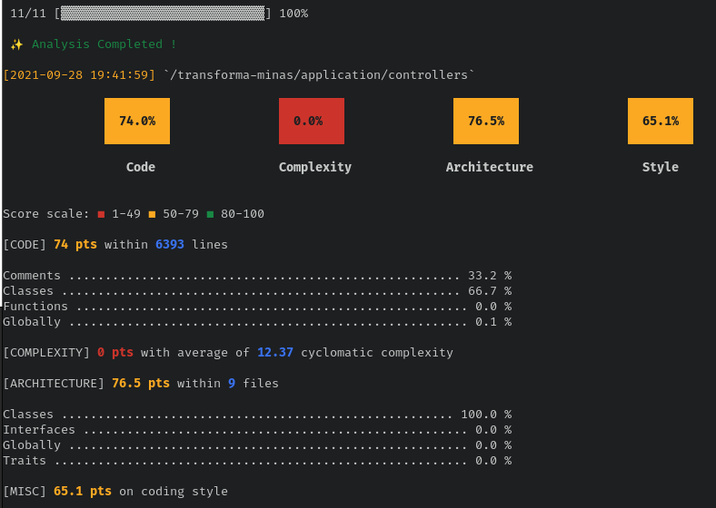
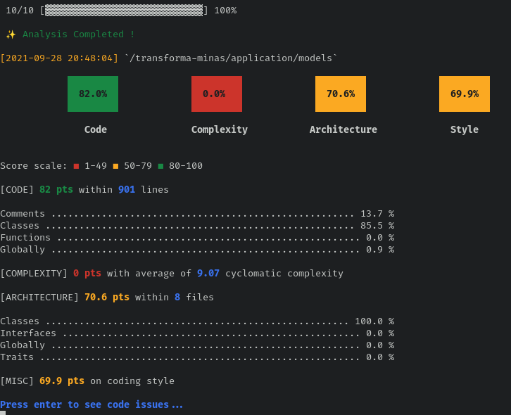
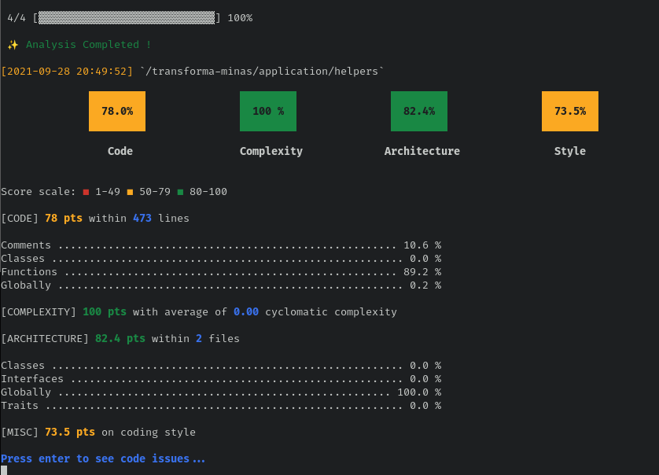

Analise da qualidade com a ferramenta PHP Insight¶
Utilizaremos a ferramenta PHP Insight para coletar métricas e medidas relacionadas á qualidade do código da plataforma. Iremos analisar a métrica de complexidade ciclomatica, mal cheiro de código, arquitetura e estilo de programação em PHP. Iremos focar em arquivos que pertencem ao domínio da aplicação e excluiremos diretórios que pertençam ao Codeigniter ou a bibliotecas de terceiros.
Iremos avaliar as métricas dos principais diretórios: application/controllers, application/models/,
application/helpers/ e application/views/. São eles que de fato implementam o domínio da aplicação.
Faremos então uma análise top-down, ou seja, avaliaremos as métricas
de forma geral e depois avaliaremos os diretórios individualmente. A ferramenta atribui uma
pontuação de 0 a 100 para cada uma das métricas
(código, complexidade, arquitetura e estilo). Para cada métrica uma série de atributos são
analisados e são eles quem compõe a nota final dada pela ferramenta. Iremos interpretar os
percentuais que a ferramenta atribuiu para cada uma das métricas e tentar justificar, com exemplos
no código, as razões para cada percentual.
Visão geral¶
Para coletar as métricas, executamos o seguinte comando:
vendor/bin/phpinsights analyse application/controllers application/models/ application/helpers/ application/views/
e obtivemos o seguinte resultado:

Todos as métricas coletadas nessa etapa ficaram a baixo de 80, que é o valor considerado como bom pela ferramenta. Para a métrica de código foi atribuido 61 pontos (de 0 a 100). Nessa métrica, são identificadas más práticas de programação em php como: variáveis sem uso, métodos sem retorno, estruturas de controle (if/else) mal utilizadas, escopo de funções (public/private) incorretas entre outros.
A Complexidade média do transforma está em 0, ou seja, o uso de estruturas condicionais ao longo do código não poderia ser pior, segundo os dados coletados pela ferramenta. Um dos resultados da ferramenta diz o seguinte:

Ou seja, existem classes no código do transforma com complexidade altissima, o que impacta diretamente na manutenibilidade e estabilidade do código.
A arquitetura média está em 64 pontos. Aqui são analisados praticas como: tamanho das classes, número de métodos por classe, gestão de dependencias, tamanho das funções entre outros. Também bem abaixo de 80. O estilo médio do código está em 55.4 pontos. O código apresenta má formatação e está fora do padrão utilizado pela comunidade PHP.
Na visão geral do código, utilizando como insumo os resultados obtidos com a ferramenta, o Transforma Minas apresenta uma série de pontos que precisam ser melhorados, principalmente no que se refere à complexidade ciclomática. Agora iremos avaliar individualmente os principais diretórios da aplicação.
application/controllers¶
Para coletar as métricas, executamos o seguinte comando:
vendor/bin/phpinsights analyse application/controllers/
e obtivemos o seguinte resultado: 
application/models¶
Para coletar as métricas, executamos o seguinte comando:
vendor/bin/phpinsights analyse application/models/
e obtivemos o seguinte resultado:

application/helpers¶
Para coletar as métricas, executamos o seguinte comando:
vendor/bin/phpinsights analyse application/helpers/
e obtivemos o seguinte resultado:

application/views¶
Para coletar as métricas, executamos o seguinte comando:
vendor/bin/phpinsights analyse application/views/
e obtivemos o seguinte resultado:

A ferramenta PHP Insight calcula a complexidade ciclomatica apenas para classes. A implementação da camada de visualização(view) do transforma não utiliza classes, o que pode levar ao falso positivo que esses arquivos possuem baixa complexidade ciclomatica. Avaliaremos com mais profundidade a camada de visualização com as métricas coletadas com a ferramenta churn-php. Ignorando a métrica de complexidade, o estilo do código nas views segue ruim, e irá precisar de melhorias e refatorações.